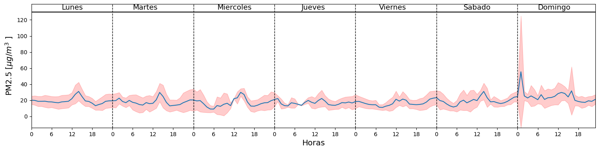

Uso del API MakeSens
Uso del API MakeSens#
Instalar Librerias
#!pip install APIMakeSens
#!pip install tk
Cargar librería MakeSens
# Makesens
from MakeSens import MakeSens
# Pandas
import pandas as pd
# datetime para manejo de fechas
import datetime
# pytz para manejo de zonas horarias
import pytz
import pylab as plt
Definir token y cargar listado de estaciones
#estaciones = pd.read_csv("evasLA-CoNGA.csv").set_index("id")
Definir rango de fechas para descarga
fechaFin = datetime.datetime.now(pytz.timezone('America/Bogota')).strftime('%Y-%m-%d %H:%M:%S')
fechaInicio = (datetime.datetime.now(pytz.timezone('America/Bogota'))-datetime.timedelta(hours=240)).strftime('%Y-%m-%d %H:%M:%S')
data = MakeSens.download_data('E2_00021', fechaInicio, fechaFin, 'h')
---------------------------------------------------------------------------
gaierror Traceback (most recent call last)
File /usr/lib/python3.10/site-packages/urllib3/connection.py:174, in HTTPConnection._new_conn(self)
173 try:
--> 174 conn = connection.create_connection(
175 (self._dns_host, self.port), self.timeout, **extra_kw
176 )
178 except SocketTimeout:
File /usr/lib/python3.10/site-packages/urllib3/util/connection.py:72, in create_connection(address, timeout, source_address, socket_options)
68 return six.raise_from(
69 LocationParseError(u"'%s', label empty or too long" % host), None
70 )
---> 72 for res in socket.getaddrinfo(host, port, family, socket.SOCK_STREAM):
73 af, socktype, proto, canonname, sa = res
File /usr/lib/python3.10/socket.py:955, in getaddrinfo(host, port, family, type, proto, flags)
954 addrlist = []
--> 955 for res in _socket.getaddrinfo(host, port, family, type, proto, flags):
956 af, socktype, proto, canonname, sa = res
gaierror: [Errno -3] Temporary failure in name resolution
During handling of the above exception, another exception occurred:
NewConnectionError Traceback (most recent call last)
File /usr/lib/python3.10/site-packages/urllib3/connectionpool.py:703, in HTTPConnectionPool.urlopen(self, method, url, body, headers, retries, redirect, assert_same_host, timeout, pool_timeout, release_conn, chunked, body_pos, **response_kw)
702 # Make the request on the httplib connection object.
--> 703 httplib_response = self._make_request(
704 conn,
705 method,
706 url,
707 timeout=timeout_obj,
708 body=body,
709 headers=headers,
710 chunked=chunked,
711 )
713 # If we're going to release the connection in ``finally:``, then
714 # the response doesn't need to know about the connection. Otherwise
715 # it will also try to release it and we'll have a double-release
716 # mess.
File /usr/lib/python3.10/site-packages/urllib3/connectionpool.py:386, in HTTPConnectionPool._make_request(self, conn, method, url, timeout, chunked, **httplib_request_kw)
385 try:
--> 386 self._validate_conn(conn)
387 except (SocketTimeout, BaseSSLError) as e:
388 # Py2 raises this as a BaseSSLError, Py3 raises it as socket timeout.
File /usr/lib/python3.10/site-packages/urllib3/connectionpool.py:1042, in HTTPSConnectionPool._validate_conn(self, conn)
1041 if not getattr(conn, "sock", None): # AppEngine might not have `.sock`
-> 1042 conn.connect()
1044 if not conn.is_verified:
File /usr/lib/python3.10/site-packages/urllib3/connection.py:358, in HTTPSConnection.connect(self)
356 def connect(self):
357 # Add certificate verification
--> 358 self.sock = conn = self._new_conn()
359 hostname = self.host
File /usr/lib/python3.10/site-packages/urllib3/connection.py:186, in HTTPConnection._new_conn(self)
185 except SocketError as e:
--> 186 raise NewConnectionError(
187 self, "Failed to establish a new connection: %s" % e
188 )
190 return conn
NewConnectionError: <urllib3.connection.HTTPSConnection object at 0x7fc30eb17ee0>: Failed to establish a new connection: [Errno -3] Temporary failure in name resolution
During handling of the above exception, another exception occurred:
MaxRetryError Traceback (most recent call last)
File /usr/lib/python3.10/site-packages/requests/adapters.py:489, in HTTPAdapter.send(self, request, stream, timeout, verify, cert, proxies)
488 if not chunked:
--> 489 resp = conn.urlopen(
490 method=request.method,
491 url=url,
492 body=request.body,
493 headers=request.headers,
494 redirect=False,
495 assert_same_host=False,
496 preload_content=False,
497 decode_content=False,
498 retries=self.max_retries,
499 timeout=timeout,
500 )
502 # Send the request.
503 else:
File /usr/lib/python3.10/site-packages/urllib3/connectionpool.py:787, in HTTPConnectionPool.urlopen(self, method, url, body, headers, retries, redirect, assert_same_host, timeout, pool_timeout, release_conn, chunked, body_pos, **response_kw)
785 e = ProtocolError("Connection aborted.", e)
--> 787 retries = retries.increment(
788 method, url, error=e, _pool=self, _stacktrace=sys.exc_info()[2]
789 )
790 retries.sleep()
File /usr/lib/python3.10/site-packages/urllib3/util/retry.py:592, in Retry.increment(self, method, url, response, error, _pool, _stacktrace)
591 if new_retry.is_exhausted():
--> 592 raise MaxRetryError(_pool, url, error or ResponseError(cause))
594 log.debug("Incremented Retry for (url='%s'): %r", url, new_retry)
MaxRetryError: HTTPSConnectionPool(host='api.makesens.co', port=443): Max retries exceeded with url: /ambiental/metricas/E2_00021/data?agg=1h&agg_type=mean&items=1000&max_ts=1675113120000&min_ts=1674249120000 (Caused by NewConnectionError('<urllib3.connection.HTTPSConnection object at 0x7fc30eb17ee0>: Failed to establish a new connection: [Errno -3] Temporary failure in name resolution'))
During handling of the above exception, another exception occurred:
ConnectionError Traceback (most recent call last)
Cell In [5], line 1
----> 1 data = MakeSens.download_data('E2_00021', fechaInicio, fechaFin, 'h')
File ~/.local/lib/python3.10/site-packages/MakeSens/MakeSens.py:36, in download_data(id_device, start_date, end_date, sample_rate, format, fields)
34 else:
35 url = f'https://api.makesens.co/ambiental/metricas/{id_device}/data?agg=1{sample_rate}&agg_type=mean&fields={fields}&items=1000&max_ts={str(end * 1000)}&min_ts={str(tmin * 1000)}'
---> 36 rta = requests.get(url).content
37 d = json.loads(rta)
38 try:
File /usr/lib/python3.10/site-packages/requests/api.py:73, in get(url, params, **kwargs)
62 def get(url, params=None, **kwargs):
63 r"""Sends a GET request.
64
65 :param url: URL for the new :class:`Request` object.
(...)
70 :rtype: requests.Response
71 """
---> 73 return request("get", url, params=params, **kwargs)
File /usr/lib/python3.10/site-packages/requests/api.py:59, in request(method, url, **kwargs)
55 # By using the 'with' statement we are sure the session is closed, thus we
56 # avoid leaving sockets open which can trigger a ResourceWarning in some
57 # cases, and look like a memory leak in others.
58 with sessions.Session() as session:
---> 59 return session.request(method=method, url=url, **kwargs)
File /usr/lib/python3.10/site-packages/requests/sessions.py:587, in Session.request(self, method, url, params, data, headers, cookies, files, auth, timeout, allow_redirects, proxies, hooks, stream, verify, cert, json)
582 send_kwargs = {
583 "timeout": timeout,
584 "allow_redirects": allow_redirects,
585 }
586 send_kwargs.update(settings)
--> 587 resp = self.send(prep, **send_kwargs)
589 return resp
File /usr/lib/python3.10/site-packages/requests/sessions.py:701, in Session.send(self, request, **kwargs)
698 start = preferred_clock()
700 # Send the request
--> 701 r = adapter.send(request, **kwargs)
703 # Total elapsed time of the request (approximately)
704 elapsed = preferred_clock() - start
File /usr/lib/python3.10/site-packages/requests/adapters.py:565, in HTTPAdapter.send(self, request, stream, timeout, verify, cert, proxies)
561 if isinstance(e.reason, _SSLError):
562 # This branch is for urllib3 v1.22 and later.
563 raise SSLError(e, request=request)
--> 565 raise ConnectionError(e, request=request)
567 except ClosedPoolError as e:
568 raise ConnectionError(e, request=request)
ConnectionError: HTTPSConnectionPool(host='api.makesens.co', port=443): Max retries exceeded with url: /ambiental/metricas/E2_00021/data?agg=1h&agg_type=mean&items=1000&max_ts=1675113120000&min_ts=1674249120000 (Caused by NewConnectionError('<urllib3.connection.HTTPSConnection object at 0x7fc30eb17ee0>: Failed to establish a new connection: [Errno -3] Temporary failure in name resolution'))
data.columns.values
array(['humedad2', 'irradiancia', 'pm_n_2_5_2', 'pm25_1', 'pm25_2',
'pm_temperatura', 'pm_n_2_5_1', 'iluminancia', 'pm1_1', 'pm1_2',
'humedad', 'temperatura', 'presion', 'uv', 'pm_n_10_0_2',
'pm_n_10_0_1', 'pm_n_0_5_2', 'temperatura2', 'pm_n_0_3_2',
'pm_n_0_5_1', 'pm_n_0_3_1', 'pm_n_5_0_1', 'pm_humedad',
'pm_n_5_0_2', 'pm10_2', 'pm10_1', 'pm_n_1_0_1', 'pm_n_1_0_2',
'precipitacion'], dtype=object)
fig=plt.figure()
data.plot( y=["temperatura2","pm_temperatura"])
plt.xticks(rotation='vertical')
plt.show()
<Figure size 640x480 with 0 Axes>
fechaInicio = (datetime.datetime.now(pytz.timezone('America/Bogota'))-datetime.timedelta(days=30)).strftime('%Y-%m-%d %H:%M:%S')
MakeSens.weekly_profile('E2_00021', fechaInicio, fechaFin, 'PM2.5')
